Red Bull × GoPro / 2016
From Supplier to Partner
GoPro tells the Stratos story from the cameras on Felix Baumgartner’s suit.
The partnership archive / Edition 01 / Fame first

“Every partnership announcement tells you what was signed. Very few tell you what each side got.”
Brand Turning Points asked why people paid attention. This companion archive asks what two organisations could achieve together that neither could alone. Edition 01 starts with the partnerships everyone remembers, and asks of each one: what did each side bring, and what did each side get?
15 case studies / 1999 to 2021
Opening story / Red Bull and GoPro / 2016
GoPro’s cameras filmed Felix Baumgartner’s jump from the edge of space in 2012, when GoPro was just a supplier. Four years later Red Bull signed it as an exclusive partner and took a stake in the company.
01 / The finding
None of these fifteen famous partnerships publishes a modelled effect. Five can point to sales or value moving: Taco Bell sold a billion Doritos Locos Tacos, McDonald’s sales swung back during the Travis Scott meal, and Supreme’s value climbed after Louis Vuitton. The rest offer views, sell-outs or a record of the deal itself.
What gets published instead are the inputs: a stake, a launch date, a rumoured price. Heineken’s Bond deal is the biggest number in the edition, and nobody ever confirmed it. The outcome for each partner, separately, is almost never shown.
Fame is not the same as a good deal. These cases are the beginning of the archive, and the editions that follow look for partnerships that did measure what each side gained.
Modelled effectSales or value trendReach only or archival
02 / The patterns
Every case is sorted by what the partners traded. Talent for scale leads: a famous designer or artist, and a big brand to take them to everyone. Choose one to filter the archive.
One side lends a story or character the other could not create.
A designer or artist brings taste, and a big brand brings reach.
Two products combine into something neither could sell alone.
One side makes something worth watching, and the other gets it seen.
A platform lends its users, and a partner brings a reason to show up.
One side pays to stand next to something people already love.
03 / The screening room
Four films from the partners’ own channels. Watch for who gets the credit on screen.
Red Bull × GoPro / 2016
GoPro tells the Stratos story from the cameras on Felix Baumgartner’s suit.
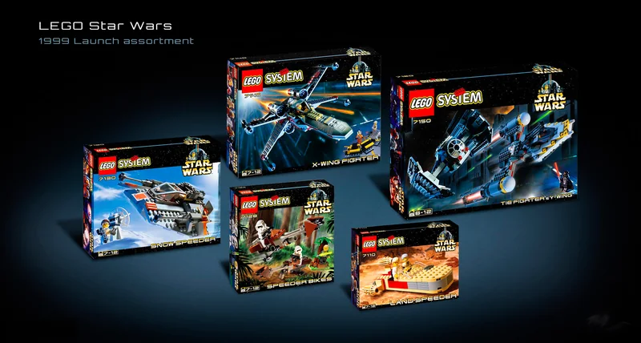
LEGO × Lucasfilm / 1999
LEGO’s 25th anniversary short shows what the licence made possible.
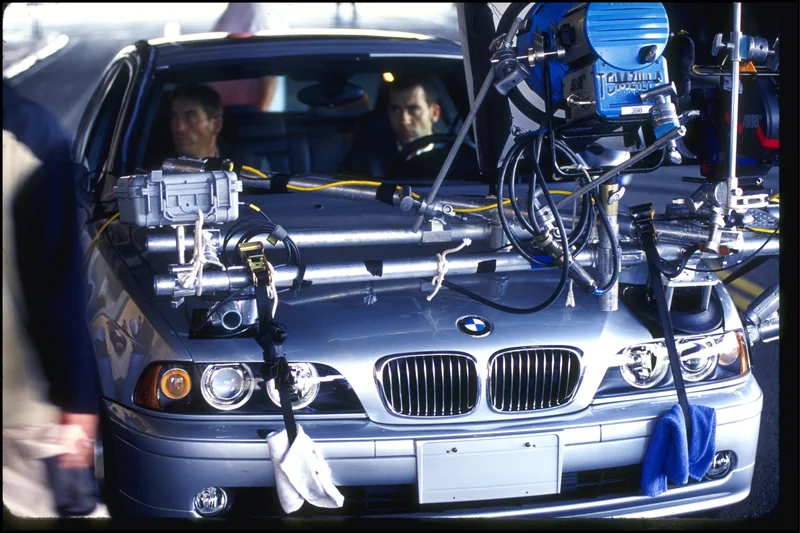
BMW × Hollywood directors / 2001
Wong Kar-wai’s film for the series, with Clive Owen as the Driver.
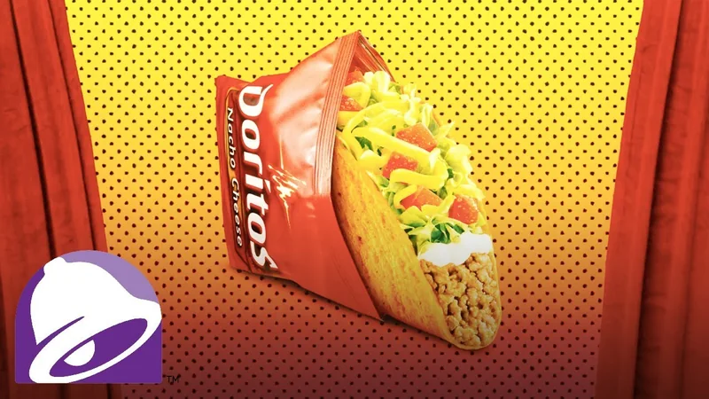
Taco Bell × Doritos / 2012
Taco Bell’s own telling of how two brands became one shell.
04 / The collection
See each partnership alongside what each side brought. Open each case for the film, my take and how it was measured.
Modelled effectSales trendSurveyReach only or archival
15 partnerships
Red Bull and GoPro, 2016
When Felix Baumgartner jumped from the edge of space for Red Bull Stratos in 2012, his suit carried GoPro cameras and the live stream set a YouTube record for concurrent views. GoPro was there as a supplier, not a partner, and by 2015 its shares were falling.
Red Bull made the events and the films. GoPro made the cameras that captured them, and had its own channel to show the results.
In May 2016 the two signed a multi-year exclusive partnership. GoPro became Red Bull’s exclusive point-of-view camera, the two agreed to share content across their channels, and Red Bull took a small stake in GoPro.
Plenty of great partnerships start as a purchase order. GoPro earned its place on Red Bull’s biggest stage before it asked for a contract.
The deal terms are documented in GoPro’s announcement, and a Red Bull TV channel for GoPro followed that August. Neither company published what the partnership did for sales or audiences.
Work together before you sign together. A supplier relationship is the cheapest way to find out whether a partnership will work.
LEGO Group and Lucasfilm
LEGO had never sold another company’s characters. Some of its executives were reluctant to start, and Star Wars: Episode I was due in 1999.
LEGO brought the bricks and the shelf space. Lucasfilm brought the most valuable story in film merchandise.
The licence was signed in 1998 after owner Kjeld Kirk Kristiansen gave the go-ahead, and the theme was unveiled at the New York Toy Fair in February 1999.
The deal LEGO nearly said no to became its longest-running theme. Some of the best partnerships need someone senior to overrule the doubters.
Image: LEGO Star Wars 1999 launch assortment · The Brothers Brick archive
The licence has been renewed several times and is reported as one of the best-selling toy lines. The sales figure comes from a press release. LEGO still came close to running out of money in 2003 and 2004, so the licence alone didn’t secure the business.
A strong licence can grow sales while the core business weakens. Track both before you call the partnership a success.
Fallon Minneapolis for BMW
Car advertising was all scenic roads and voiceovers, and broadband was new. BMW’s agency, Fallon, wanted something people would choose to watch.
BMW paid for the films and provided the cars. Directors including Ang Lee, Guy Ritchie, Wong Kar-wai and John Woo made films they could put their names to.
From 2001 BMW released eight short films starring Clive Owen as the Driver, watched online rather than on television.
Branded entertainment before anyone called it that. BMW bought directors’ credibility and let them keep it.
Image: The Hire · behind-the-scenes photograph, BMW Group PressClub
BMW’s US sales rose about 12% in 2001 and 17% in 2002, and some coverage credits the films. That is a correlation, and the view counts are BMW’s own.
If you want talent to do its best work, give it creative control and judge the result on attention, not on product shots.
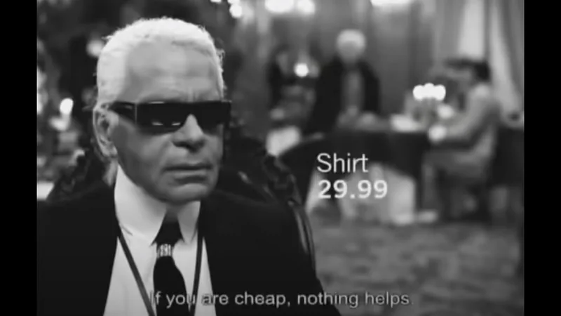
H&M × Karl Lagerfeld / 2004 / Talent for scaleKarl Lagerfeld for H&MThe first big designer collaboration on the high street.Designer collaboration · Launched Sold outWithin hours in many stores · legacy factH&M and Karl Lagerfeld, 2004
Designer fashion and the high street lived in different worlds. H&M sold trends cheaply, and Lagerfeld designed for Chanel.
Lagerfeld lent his name and designs. H&M brought hundreds of stores and prices most people could afford.
The capsule collection went on sale on 12 November 2004. Many stores sold out within hours, and H&M’s marketing chief said the company had never seen anything like it.
Every designer collaboration since has copied this one. H&M turned a one-off into an annual event that customers queue for.
Image: Karl Lagerfeld for H&M (2004) · television advert still from an archive upload
Coverage agrees the collection sold out fast, though accounts of how fast differ. H&M published no sales figure. Lagerfeld later said he was let down by the retailer, partly over how few pieces it made.
Scarcity makes headlines and disappoints customers. Agree how much you will make before you agree who you will make it with.
Nike and Apple, 2006
Runners carried iPods but had no easy way to track their runs. Nike wanted a digital relationship with runners, and Apple wanted more reasons to buy an iPod.
Nike put a pocket for a sensor in its shoes. Apple made the iPod read it and show the run.
Announced on 23 May 2006 and launched that July, the $29 Sport Kit was sold through Apple’s and Nike’s stores and websites.
This is where Nike learned to be a software company. The shoe was the hardware, and Apple showed it the rest.
Image: Nike+iPod (2006) · original advert still from the brandcode archive upload
The usage figure was reported in 2007. Neither company published sales of the kit, and later Nike+ membership figures vary by source. The partnership continued into Nike’s later digital products.
Put your product inside your partner’s product, not next to it. Integration is harder to copy than co-branding.
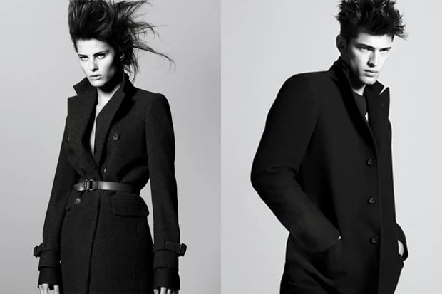
Uniqlo × Jil Sander / 2009 / Talent for scale+JA minimalist designer at mass-market prices.Designer collaboration · Launched and revived 2009 to 2011The first run, before a 2020 revival · legacy factUniqlo and Jil Sander, 2009
Uniqlo was expanding abroad and wanted to be seen as more than cheap basics. Jil Sander’s quiet, precise style fitted its products.
Jil Sander designed and advised as creative consultant. Uniqlo made the clothes and sold them at its usual prices around the world.
+J launched in autumn 2009 and ran until 2011. It returned in 2020, when queues formed outside stores.
Less noise than H&M’s collaborations, more effect. +J helped make Uniqlo look like design, not just value.
Image: Uniqlo +J autumn 2009 campaign · reproduced by Hypebeast
Coverage framed +J as a way for Uniqlo to export its image abroad. Uniqlo’s sales were rising strongly in 2009, but no figure separates +J from the rest of the business.
A long collaboration can reposition a brand in a way a one-off capsule can’t. Agree the length before you agree the launch.
Taco Bell and Frito-Lay, 2012
Taco Bell needed a reason for people to visit, and Doritos wanted to be eaten beyond the bag.
Frito-Lay developed a shell made from Doritos, testing more than 50 prototypes to keep the crunch without splintering. Taco Bell put it on the menu.
The Doritos Locos Taco launched in March 2012 and became one of the fastest-selling products Taco Bell had made.
The most commercially successful collaboration in this edition, and the least glamorous. It sold a billion tacos because it tasted like the idea.
Image: Doritos Locos Taco · Taco Bell’s official retrospective thumbnail
The billion-unit figure is widely reported, and Taco Bell said it added about 15,000 workers to meet demand. It is a sales trend, and it doesn’t show what the partnership added for Frito-Lay.
The best co-branded products need both partners’ engineers, not just both logos.
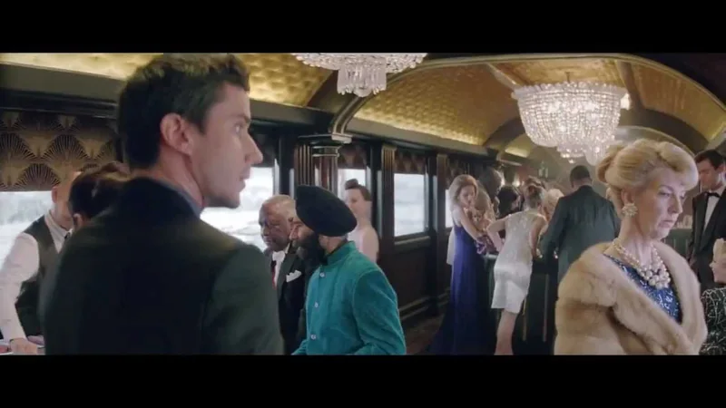
Heineken × James Bond / 2012 / Money for associationSkyfallJames Bond swapped his martini for a beer.Sponsorship and placement · Launched $45mRumoured value of the deal, never confirmed · legacy factHeineken, 2012 · Wieden+Kennedy Amsterdam
Heineken had appeared in Bond films since the 1990s. Big films need partners to pay for them, and Skyfall marked the series’ 50th anniversary.
Heineken paid for placement and ran its own Bond campaign. The film got money and a global advertising push.
In Skyfall, Bond drinks a Heineken on screen, and Heineken’s ‘Crack the Case’ campaign starring Daniel Craig ran around the release.
The biggest number in this edition is one nobody confirmed. That is a pattern I expect to see a lot in this archive.
Image: Heineken, The Express (2012) · still from an archive upload of the Skyfall tie-in
The deal value was never confirmed, and no effect on sales was published. Fans criticised the placement, and Daniel Craig reportedly called it unfortunate while accepting that big films need product placement.
If your partner’s fans see the deal as a compromise, the cost isn’t only money. Ask how the audience will read it.
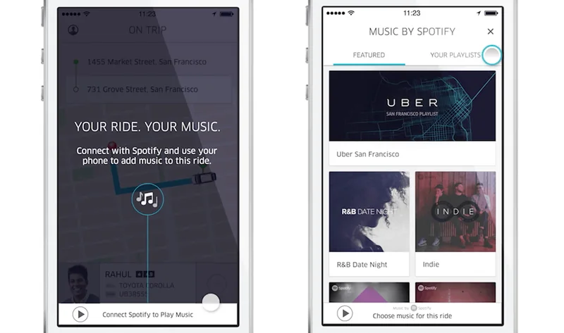
Spotify × Uber / 2014 / Platform for audienceYour Music in Someone Else’s CarRiders could play their own music in an Uber.Platform integration · Launched 10Launch cities · legacy factSpotify and Uber, 2014
Spotify wanted to reach young city dwellers. Uber wanted rides to feel personal rather than like any taxi.
Spotify linked its accounts to the Uber app. Uber gave riders control of the music in music-enabled cars.
The feature launched in November 2014 in ten cities, for Spotify Premium users in music-enabled cars. Drivers kept control of the volume.
One of the most talked-about tech partnerships of its year, and one of the hardest to find results for. Great headline, narrow door.
Image: Spotify and Uber in-ride music integration · image reproduced by Semrush
No results were published, and both chief executives declined to say whether the deal involved revenue sharing. The feature only worked for paying Spotify users in selected cars.
A clever integration still needs a reason for most users to use it. Check how many of your partner’s customers can actually take part.
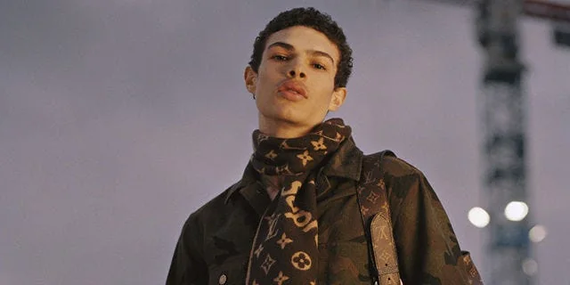
Supreme × Louis Vuitton / 2017 / Talent for scaleSupreme × Louis VuittonStreetwear walked into a luxury house.Designer collaboration · Launched $500mCarlyle’s reported price for about half of Supreme, 2017Louis Vuitton and Supreme, 2017
Luxury houses wanted younger customers, and Supreme had the credibility they lacked. Years earlier, Louis Vuitton had sent Supreme a cease-and-desist letter over its monogram.
Supreme brought its logo and its following. Louis Vuitton brought luxury materials, craft and status.
The collection showed in Paris in January 2017 and sold through pop-up stores. Later that year the Carlyle Group bought about half of Supreme.
Louis Vuitton once sued for less. Supreme turned that into a collaboration that changed what luxury thought cool looked like.
Image: Louis Vuitton × Supreme, autumn/winter 2017 menswear runway · launch photograph via ELLE
Supreme’s value rose sharply after 2017, from about $1bn implied by Carlyle’s stake to $2.1bn in VF’s purchase. The collaboration was part of that story, but no source isolates its effect.
A collaboration can raise the value of the smaller partner more than the sales of the bigger one. Know which side you are on.
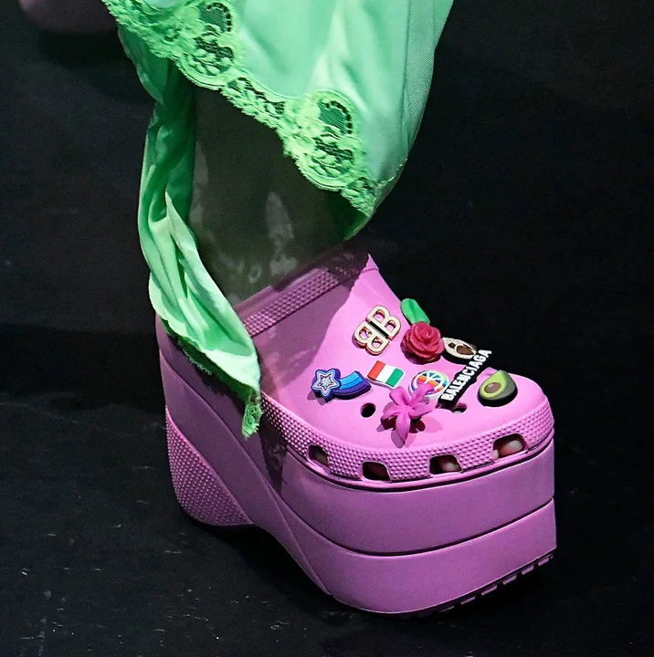
Crocs × Balenciaga / 2017 / Talent for scaleThe Platform CrocThe shoe people loved to mock went down a Paris runway.Designer collaboration · Launched and repeated +93%Crocs revenue growth, second quarter 2021Crocs and Balenciaga, 2017
Crocs was seen as comfortable and ugly. Balenciaga, under Demna, made a habit of turning the unfashionable into fashion.
Balenciaga put a platform Croc on its runway. Crocs got the fashion credibility it had never had.
The platform Croc appeared at Paris Fashion Week in October 2017. The two brands worked together again in later years.
The most surprising turnaround in this edition. Balenciaga gave Crocs permission to be in on the joke.
Image: Balenciaga spring/summer 2018 runway, shown in 2017 · photograph reproduced by ELLE
Crocs’ revenue soared after 2017 under a new chief executive who made collaborations central, from Balenciaga to celebrities and snack brands. The pandemic’s comfort trend helped too, so no single partnership can take the credit.
One partnership can start a change in perception. Many partnerships, in a clear strategy, sustain it.
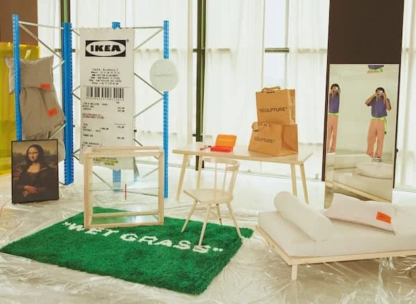
IKEA × Virgil Abloh / 2019 / Talent for scaleMarkeradA streetwear designer put quotation marks on flat-pack furniture.Designer collaboration · Launched €129Price of the ‘Keep off’ rug, later resold for up to €1,500 · legacy factIKEA and Virgil Abloh, 2019
IKEA wanted to reach young people furnishing their first homes. Virgil Abloh, of Off-White and later Louis Vuitton, was the most influential designer for that generation.
Abloh designed the Markerad collection, including a receipt-shaped rug and one reading ‘Keep off’. IKEA made it at its scale and prices.
The rugs sold out at a Paris pop-up in 2018, and the full Markerad collection reached selected stores in 2019.
Abloh’s quotation marks were the joke and the point. IKEA borrowed a generation’s favourite designer and let him tease its own products.
The IKEA Museum records that the rug sold out, and resale prices show demand. IKEA published no sales or brand figures for the collection.
When resellers make more from your collaboration than you do, you have under-made it, or found something worth more than your price.
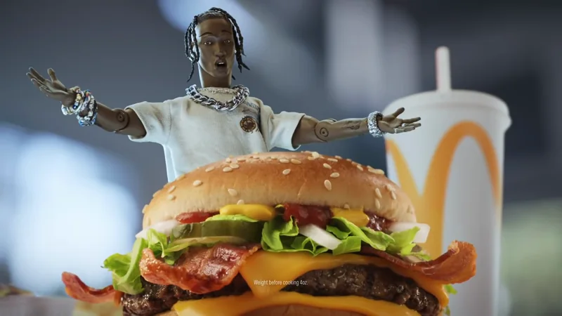
McDonald’s × Travis Scott / 2020 / Talent for scaleThe Travis Scott MealA rapper’s usual order, sold as a menu item.Co-branded product · Launched +4.6%US same-store sales, third quarter 2020McDonald’s and Travis Scott, 2020
McDonald’s sales had fallen during lockdown, and it wanted younger customers back. Travis Scott was at the height of his fame.
Scott lent his name and his usual order. McDonald’s put it on the menu across the US and sold merchandise alongside.
The meal launched in September 2020. Within about a week some restaurants ran short of ingredients, and McDonald’s began allocating supplies centrally.
It turned the celebrity endorsement into a menu item, and started a run of celebrity meals that every chain copied.
Image: McDonald’s, The Travis Scott Meal (2020) · television advert still via Muse by Clios
Sales rebounded strongly, and Forbes linked part of the rebound to the meal. Restaurants were also reopening after lockdowns, so the meal’s share can’t be separated out.
A partnership that causes shortages is a supply problem as well as a success. Plan operations with marketing, not after it.
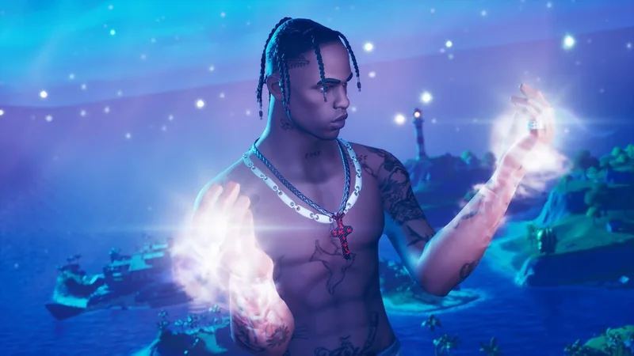
Fortnite × Travis Scott / 2020 / Platform for audienceAstronomicalA concert inside a video game, for millions at once.Platform integration · Launched 27.7mUnique players across five showsEpic Games and Travis Scott, 2020
In April 2020 concerts had stopped because of the pandemic. Fortnite had tens of millions of players, and Travis Scott had new music to promote.
Epic built a giant animated Travis Scott inside Fortnite. Scott brought his music and premiered a new song with Kid Cudi.
Astronomical ran five times between 23 and 25 April 2020. Its first show set a record for concurrent Fortnite players.
The moment games became venues. Astronomical showed a platform could be a stage, not just a place to advertise.
Image: Astronomical (2020) · Travis Scott and Fortnite’s official event video
Epic’s figures show huge attendance. Neither side published revenue from the event or its effect on music streams.
Platforms can lend an audience in a single moment. Decide in advance what you want that audience to do next.
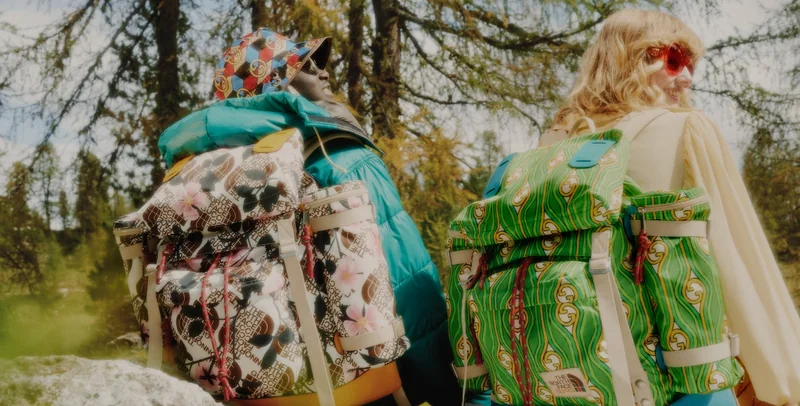
Gucci × The North Face / 2021 / Product for productGucci × The North FaceA luxury house went outdoors with a mountain brand.Co-branded product · Launched No. 1Hottest women’s product, Lyst Index, early 2021Gucci and The North Face, 2021
Outdoor clothing had become fashion, and luxury buyers wanted it too. The North Face was already among the most searched brands.
Gucci added its patterns and prestige. The North Face brought its outdoor heritage and jacket designs.
The collection launched in China and then online in early 2021, and sold out quickly.
This is what a balanced collaboration looks like. Neither brand disappears, and each borrows something real.
Image: The North Face × Gucci, first campaign · Gucci Stories
Lyst’s index measures online demand, not sales. Neither brand published sales from the collaboration.
Two strong brands can lift each other when each brings something the other can’t claim. Check that both sides are visible in the product.
No partnerships match. Try clearing the search or setting a filter back to All.
05 / The evidence
An announcement shows a deal was signed. A launch shows it happened. Only a result shows what it achieved. Each case says which of the three the record supports.
A reported price is an input, not an outcome. Where a value appears, it is flagged separately and marked as confirmed, estimated or rumoured.
A partnership can work for one side and not the other. Each case lists what each partner brought, and the evidence says which side the outcome belongs to.
Many figures come from the partners themselves or from press estimates. The source for every outcome is named, so you can judge it.
Every case gets one of five ratings, strongest first: modelled effect, sales trend, survey, reach only and archival. Here a rise in sales or company value counts as a trend. A deal term, such as a stake, is marked so it isn’t read as a result.
Each partnership changed how people saw at least one of the partners, and has a public record. Films come from the partners’ channels, and where none exists the case says so.
06 / Out now / Edition 02